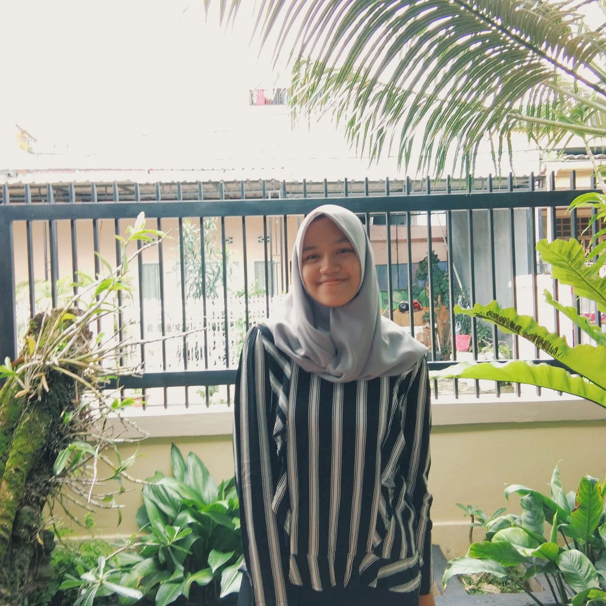

ABOUT ME
My name is Shafira Khaerunnisa Arifin. I was born in Makassar, 17th December 2002. I'm a college student of Halu Oleo University in Kendari, South East Sulawesi. I'd took S-1 Informatics Engineering on Technic Faculty. My hobbies are drawing sketch, listening music, playing some instruments, and playing some games.